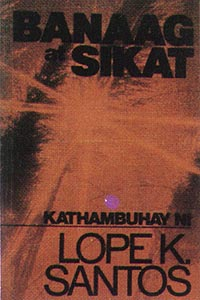
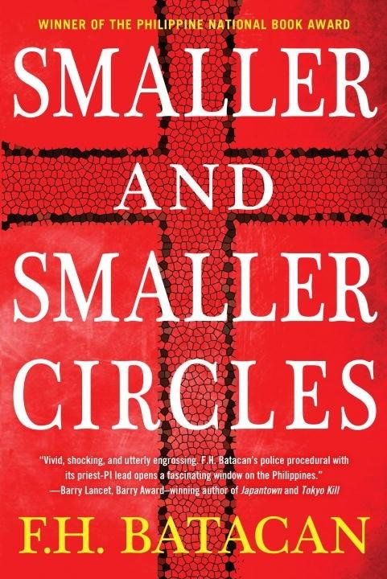
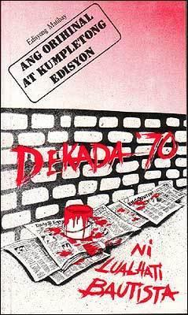

Novel
The Filipino novel, which appeared late in the nineteenth century, developed from a dynamic pre-colonial tradition of folk narratives (epics, ballads) as these interacted with and were modified by the cultural forms (corridos) introduced by the Spanish colonizers.
NOVEL
Featured Works

Banaag at Sikat
Lope K. Santos
Banaag at Sikat is a social and political commentary on Philippine society during the early 20th century.
View More
Mga Ibong Mandaragit
Amado V. Hernandez
The novel tells the story of a group of farmers who are exploited and oppressed by a wealthy landlord.
View More

Smaller and Smaller Circles
F.H. Batacan
"Smaller and Smaller Circles" is a crime thriller novel written by F.H. Batacan.
View More

Dekada '70
Lualhati Bautista
"Dekada '70" is a powerful novel by Lualhati Bautista set in the 1970s during the martial law era in the Philippines.
View More